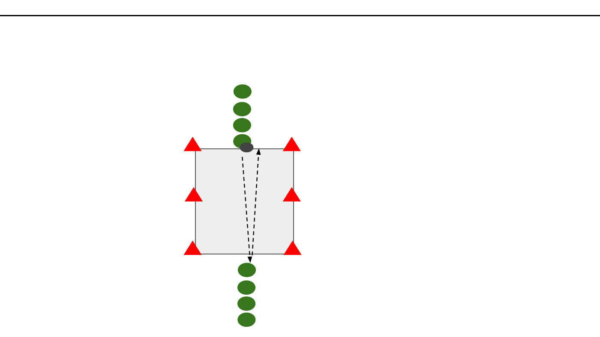

SIK Träningsplanering · Komma till avslut/Förhindra avslut · 5v5
5v5Färdighetsövning5 min15 x 12 m per plan

Vad? (Syfte)
Förbättra fotarbete och snabbhet
Beskrivning
tar emot bollen med fötterna, lägger ned bollen och driver sedan bollen längst marken, för att därefter passa över till sin Stafett medspelare. Övningen är över när alla i gruppen är tillbaka i Dela in spelarna i grupper (ca 6-8 per grupp). ursprungsposition. Ta tid. Gör övningen en gång till och peppa spelarna att försöka vara ännu snabbare denna gång. Fotbollspsykologi Ställ hälften av spelarna i respektive grupp på led längst kortsidan, andra hälften en bit framför mittlinjen. Avståndet
Spelarens färdigheter
Fotarbete, Driva
Progressioner
Bollhållare springer fram med bollen i händerna och mellan leden ska vara ca 15-20 meter. Spelarna ska springa över kastar bollen till sin lagkamrat, som försöker fånga bollen. till ena sidan och växla med sin medspelare genom att göra high Lagkamraten gör därefter samma sak till motsatt sida. Övningen five, och ställer sig sist i kön. Övningen är över när alla i gruppen är över när alla i gruppen är tillbaka i ursprungsposition. Ta tid. är tillbaka i ursprungsposition. Ta tid. Gör övningen en gång till Gör övningen en gång till och peppa spelarna att försöka vara och peppa spelarna att försöka vara ännu snabbare denna gång. ännu snabbare denna gång.